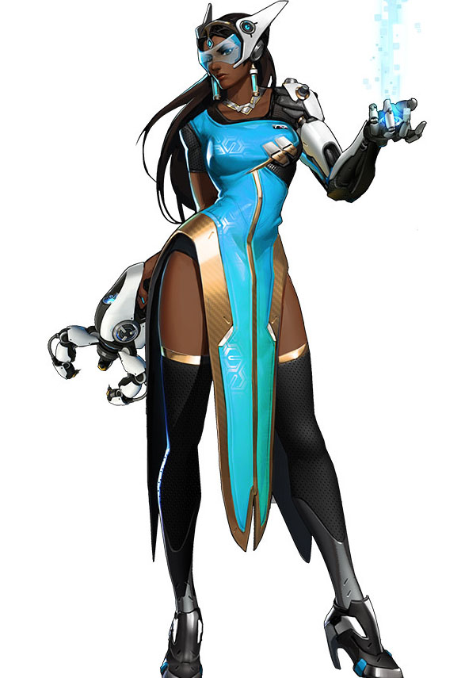

Main Menu
Symmetra

Download
5 4 3 2 1.mp3
a commendable.mp3
a healer.mp3
a momentary.mp3
a performance.mp3
a reward.mp3
align our attack.mp3
aligning.mp3
all according to.mp3
anything is possible.mp3
attack now.mp3
back in action.mp3
back online.mp3
be careful.mp3
be shielded.mp3
beauty.mp3
defences.mp3
defend with.mp3
do not believe.mp3
do not deviate.mp3
do not let up.mp3
enemy teleporter located.mp3
enemy teleporter.mp3
enemy turret 2.mp3
enemy turret.mp3
everyone is.mp3
everyone must do.mp3
everything in its.mp3
form and function.mp3
freedom is.mp3
from light.mp3
from order springs.mp3
how can anyone.mp3
how unsightly.mp3
i am on my.mp3
i am restored.mp3
i am taking.mp3
i am with.mp3
i find violence.mp3
i had not.mp3
i have located.mp3
i need armor.mp3
i need healing.mp3
i need more.mp3
i will correct.mp3
i will follow.mp3
i will put.mp3
i will shape order.mp3
i will shield you.mp3
i will weave.mp3
if everyone.mp3
if i can think it.mp3
if we work.mp3
im claiming.mp3
im going in.mp3
im impressed.mp3
im looking out.mp3
im used to.mp3
imagine.mp3
incoming.mp3
intruder.mp3
it is time.mp3
just as.mp3
know your place.mp3
my condition.mp3
my defenses.mp3
my shields require.mp3
my teleporter is under.mp3
my teleporter is.mp3
my turret.mp3
my ult is ready.mp3
my work is not.mp3
now this is.mp3
order is restored.mp3
order will be.mp3
our fate.mp3
perception.mp3
perfect alignment.mp3
perfection.mp3
precisely.mp3
priority.mp3
protect.mp3
reality.mp3
recognition.mp3
reinforce.mp3
shield matrix.mp3
shield.mp3
something for me.mp3
symmetra.mp3
teleporter destroyed.mp3
teleporter offline.mp3
teleporter online 2.mp3
teleporter online.mp3
teleporter ready.mp3
teleporter.mp3
that is the way.mp3
that was too close.mp3
that was.mp3
the balance shifts.mp3
the cake is a lie or.mp3
the cake is not a lie.mp3
the enemy is.mp3
the enemy.mp3
the pattern.mp3
the payload has stopped.mp3
the payload is moving.mp3
the payload moves.mp3
the payload.mp3
the teleporter is.mp3
the world is.mp3
there is always room.mp3
there is beauty.mp3
there is still much.mp3
they have.mp3
this is the order.mp3
this is the shape.mp3
this is.mp3
this way is.mp3
time grows short.mp3
time is running.mp3
together we must.mp3
turret deployed.mp3
turret online.mp3
understood.mp3
we are in alignment.mp3
we are in harmony.mp3
we must stop.mp3
we must.mp3
we need a healer.mp3
we need.mp3
welcome to.mp3
well.mp3
what you call freedom.mp3
why do you.mp3
wonderful.mp3
you are trapped.mp3
you are unworthy.mp3
you perform.mp3
you were not meant.mp3